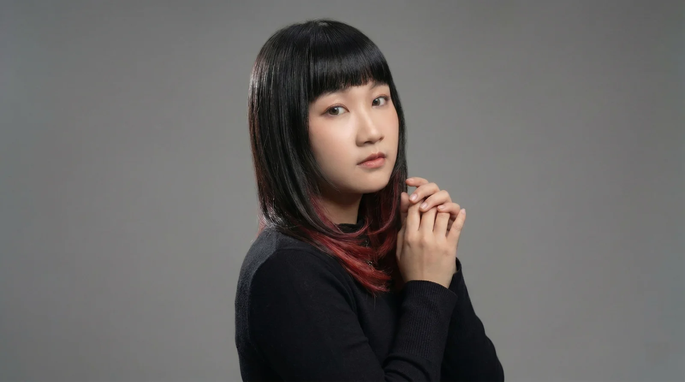
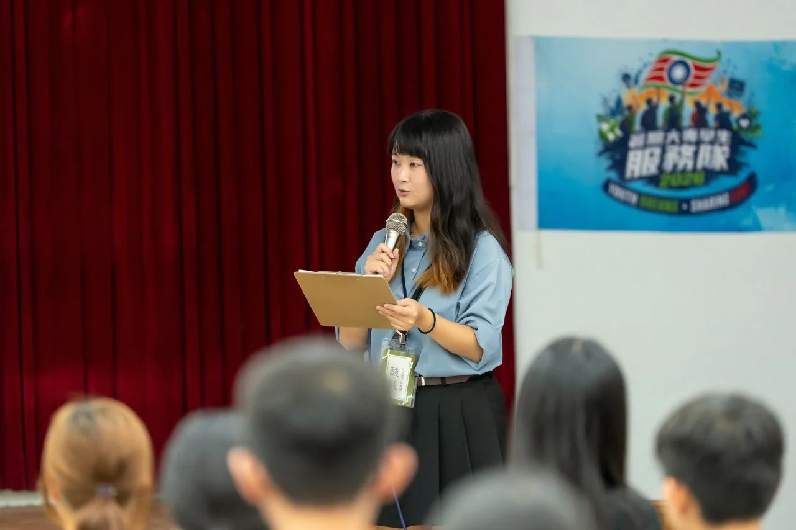

A NOTEBOOK OF STORIES & EXPERIENCES
把故事，變成
讓人走進去
的體驗。
Hi, I'm Suan. A curious maker from Tainan.
我是陳詠瑄，也可以叫我酸酸。
從在地故事出發，以視覺敘事與互動設計，
探索讓人願意靠近、開始參與的可能。


Things I care about →互動體驗企劃＋文化轉譯＋視覺敘事＋創意提案・專案協調
01 / Project pages
看看我的專案筆記！
有些故事成為角色，有些走進展場。
這裡記錄我參與過的設計、製作與現場。
A few notes on how I work...從「想傳達什麼」，
從「想傳達什麼」，
一起走到「如何做出來」。
- 梳理故事、資料與場域脈絡
- 把抽象概念轉成可討論的視覺
- 串連夥伴、製作流程與現場執行
02 / THE PERSON BEHIND THE PAGES
酸，是名字裡「瑄」的台語讀音。
很高興認識你！
從幼教走向視覺設計，我始終關注人如何理解故事、如何開始參與。目前就讀國立臺南大學設計碩士班，累積文化場域互動專案、視覺製作與活動協作經驗。
我希望持續走向整合創意企劃、體驗設計與專案製作的角色，把想法轉化為能被體驗的作品。
Suan / 詠瑄
Let's make something meaningful.
下一頁，也許可以一起寫。
關於互動體驗、文化故事，或一個還在發芽的點子。
此為首頁預覽，聯絡方式將於確認 Email 或 LinkedIn 連結後加入。